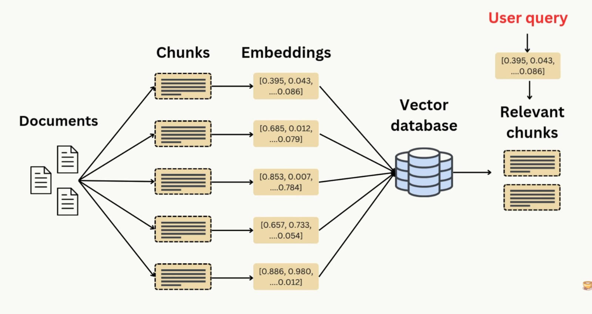

What is RAG (Retrieval-Augmented Generation)?
Retrieval-Augmented Generation (RAG) is an AI technique that combines the power of large language models (LLMs) with external knowledge sources. Instead of relying only on what the model knows, RAG retrieves relevant information from your own documents and feeds it to the LLM, resulting in more accurate, up-to-date, and context-aware answers.
Why use RAG?
- Get answers grounded in your own data, not just the LLM’s training set.
- Easily update the knowledge base by adding new documents.
- Reduce hallucinations and improve factual accuracy.
- Enable domain-specific Q&A, search, and summarization.
Typical Architecture
- Document Store: Your files (txt, pdf, docx, etc.)
- Embedding & Indexing: Convert documents into searchable vectors
- Retriever: Finds the most relevant chunks for a user’s question
- LLM (Ollama): Generates answers using both the question and retrieved context
- API/UI (FastAPI, Streamlit): Lets users upload files, ingest data, and ask questions
Common Use Cases
- Internal knowledge base Q&A for teams
- Customer support bots using product manuals
- Legal, medical, or research assistants using private documents
- Summarizing or searching large document collections
How to Build a RAG App
You can build a RAG app using open-source tools like Ollama, LangChain, FastAPI, and Streamlit. Here’s a high-level workflow:
- Upload or place your documents in a folder.
- Ingest and index the documents (convert to embeddings).
- Ask a question via the UI or API.
- The app retrieves relevant info and the LLM generates an answer.
Sample Code Snippets
# Ingest documents
from rag_core import load_and_split_docs, get_vectorstore
docs = load_and_split_docs("./data")
vectordb = get_vectorstore(docs)
vectordb.persist()
# Ask a question
from langchain_community.vectorstores import Chroma
from langchain_community.embeddings import OllamaEmbeddings
from rag_core import get_qa_chain, VECTORDB_PATH, OLLAMA_MODEL
vectordb = Chroma(
persist_directory=VECTORDB_PATH,
embedding_function=OllamaEmbeddings(model=OLLAMA_MODEL)
)
qa = get_qa_chain(vectordb)
answer = qa.run("Your question here")
print(answer)
For a full working app (with FastAPI backend and Streamlit UI), see the reference implementation below.
Reference Implementation
Check out the complete open-source project here:
github.com/GAmaranathaReddy/rag-app
Written by GenAI Edge Team, July 2025